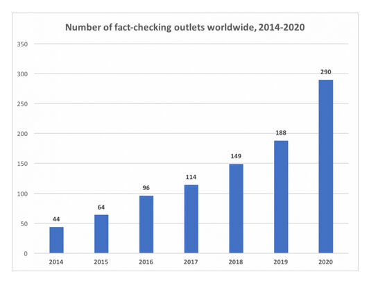
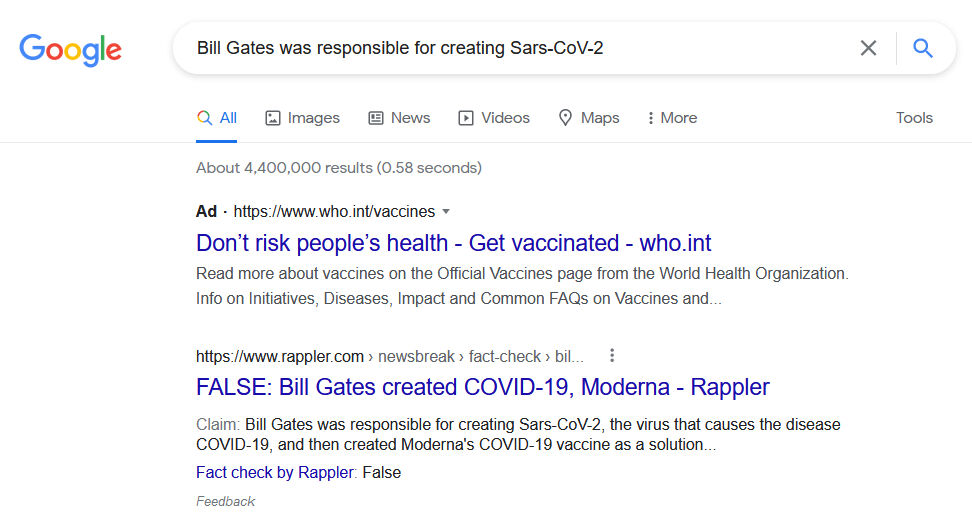

Trainees Edition
Trainers Edition
Trainees Edition
Trainers Edition
Module 17: Fact-Checking Platforms and Services
Module Description
The main purpose of this Module is to explain the fact-checking platforms, their operations and fact-checking services.
The secondary aim is to guide trainers who want to use the content of this Module to train their trainees.
With these aims, fact-checking platforms and services along with guidelines about how to teach the subject are presented.
Trainees who successfully complete this Module will be able to:
- identify the fact-checking and fact-checker
- understand the fact-checking platforms and their operations
- understand the International Fact-Checking Network (IFCN)
- understand the “Code of Principles”
- understand the corporations on fact-checking
- understand the automated fact-checking
Additionally, trainers who successfully complete this Module, will be able to demonstrate an understanding of how to teach fact-checking platforms, their operations and fact-checking services.
Module Structure
This Module consists of the following parts:
- Objective, Description of the Content and Learning Outcomes
- Structure of the Module
- Guidelines for Trainees
- Guidelines for Trainers (how to get prepared, methods to use and tips for trainers)
- Content (study materials and exercises)
- Quiz
- Resources (references and recommended sources and videos)
Main objectives of the Module, description of the content and the learning outcomes are explained in the Module Description part. Guidelines for Trainees includes instructions and suggestions for trainees. Guidelines for Trainers leads trainers through different phases of the training and provides tips which could be useful while teaching the subject. Content includes all study materials and the content related exercises. Quiz includes multiple choice and true/false questions for trainees to test their progress. Resources have two components: references and recommended sources for further reading and study. References is the list of sources cited in the content part. Recommended resources consist of a list of supplemental sources and videos which are highly recommended to read and watch for learning more on the topic.
Guidelines for Trainees
Trainees are expected to read the text, watch recommended videos and do the exercises. They can consult suggested resources for further information. After completing the study of the content trainees are strongly suggested to take the quiz to evaluate their progress. They can revise the study material if needed.
Guidelines for Trainers
Guidelines for trainers includes suggestions and tips for trainers about how to use the content of this Module to train people on the subject.
Getting Prepared
Preparing a presentation (PowerPoint/Prezi/Canva) which is enriched with visual materials (images and video clips) and clear solid examples is strongly suggested. It is also suggested to adapt the examples and exercises in this Module to issues which are more familiar to the actual target group. Choosing local examples (country specific) regarding the current or well known issues help to illustrate a point more clearly. It also helps to draw the attention of trainees. The more familiar and popular the examples are, the better the message will be communicated.
Getting Started
A short quiz (3 to 5 questions) in Kahoot or questions with Mentimeter can be used at the beginning for engaging participants in the topic. It can be used as a motivation tool as well as a tool to check trainees’ existing knowledge about the subject. Some examples for questions could be: What is fact-checking? Do you know IFCN?
Methods to Use
Various teaching methods can be used in combination during the training. Such as:
- Lecturing
- Discussion
- Group work
- Self reflection
Tips for Trainers
Warming-up
An effective way of involving participants and setting common expectations about what they will learn is to ask a few preliminary questions on the subject. This can be done through group work by asking trainees to discuss and collect ideas, but also individually by asking each participant to write their ideas on sticky notes. The activity can be conducted as follows:
- Ask trainees
- whether they know the name of any fact-checking platform
- whether they have submitted any suspicious content to any fact-checking platform before
- whether they have previously read an analysis prepared by any fact-checking platform
- whether they report any content on Facebook, Instagram or Twitter as suspicious content
Presenting the Objective of the Lesson
The objective of the lesson should be made clear (which is fact-checking platforms, their operations and fact-checking services). Following the warming-up questions it will be easier to clarify the objectives.
Presenting the Lesson Content
While presenting the content make sure to interact with the trainees and encourage them for active participation.
- While explaining the subject, examples from daily life should be included.
- If there is a fact-checking platform in your country, examples of their analysis can be shown. Also, whether the methodologies, funding, team information of these platforms are clearly included in the website can be examined in class. If there are deficiencies in the information on the website, they can be opened for in-class discussion.
- Also, both local and international examples can be used in the course. This will help trainees assimilate the subject.
Concluding
Make a short summary of the lesson and ask a couple of questions which help underlying the most important messages you would like to give.
Following question can help:
- Ask trainees what are the criteria specified in the “Code of Principles” in order to become an IFCN signatory?
When concluding, make sure that trainees understand the operations and services of fact-checking platforms.
Content: Fact-Checking Platforms and Services
Introduction
The meaning of concepts such as verification and fact-checking and the differences between these concepts were discussed in Module 16. However, before moving on to the fact-checking platforms and services that are the subject of this module, it is useful to remember the definition of fact-checking.
Fact-checking was defined in Module 16 as a process that takes place after publication and compares an open claim made publicly with reliable and authentic sources. It also focuses on the logic, coherence, and context of the claim (Mantzarlis, 2015). Person who does fact-checking and deals with this work is also referred to as a fact-checker. Also, anyone with fact-checking knowledge and skills has the potential to be a fact-checker. The work of the fact-checkers is free of partisanship, advocacy, and rhetoric. Furthermore, they seek out verifiable facts (Elizabeth, 2014).
The main purpose of fact-checkers and fact-checking platforms is to increase knowledge by researching and re-reporting the alleged facts in posts/statements made by politicians or anyone whose words/posts affect the lives of others. Besides, fact-checking should aim to provide citizens with factual, clear, and meticulously vetted information that will enable them to make informed choices when voting or other important decisions (Elizabeth, 2014). Fact-checking is based on a reference to authority. The authority here is the sources, not the fact-checkers. (Mantzarlis, Funke & Benkelman, 2019).
Fact-Checking Platforms
It is stated that the origins of fact-checking sites in the United States, which hosted the first examples of verification, go back to the 1980s and the increasing political public relations intensity during the presidency of Ronald Reagan (Dobbs, 2012, p. 1; Lowrey, 2017, p. 377). As the popularity of the Internet grew in the late 1990s, numerous politically oriented blogs, often with ideological leanings, began to fact-check political candidates and mainstream news outlets (Lowrey, 2017, p. 377). The origin of verification sites also goes back to Snopes and similar websites that emerged in the 90s and exposed the imposture. These sites have begun to examine political claims as well as many other issues (Fader, 2012; Lowrey, 2017, p. 377).
The 2000s, on the other hand, witnessed the rise of platforms that can be called independent political fact-checkers and their rapid spread around the world. The political elections of recent years have provided fertile ground for the emergence and growth of fact-checking platforms, one of many new forms and practices of journalism in the digital age (Graves & Cherubini, n.d., p. 6; Lowrey, 2017, p. 376). Policy makers and foundations have seen fact-checking as an effective tool against online disinformation (Mantzarlis, Funke & Benkelman, 2019). The first platforms dedicated to assessing the truth of political claims emerged in the United States in the early 2000s (Graves & Cherubini, n.d., p. 6). Factcheck.org (2003), PolitiFact (2007) are among the first organizations that started to operate as a non-media, independent verification platform. According to the latest count by Duke Reporters' Lab (Stencel & Luther, 2021), there are a total of 341 active fact-checking projects in approximately 102 countries as of June 2021. This number was announced as 290 in June 2020 (Stencel & Luther, 2020).

Source: Duke Reporters’ Lab
Various studies have been carried out on the effects of fact-checking over time and different opinions have been put forward (Lim, 2018, p. 1). Some studies have indicated that fact-checking will deter politicians from promoting false or misleading claims and can serve as a comprehensive/consistent monitoring tool for them (Nyhan ve Reifler, 2015, p. 2, 19-20). Other groups of studies have argued that fact-checking has little effect on changing the behaviour of politicians, expressing that politicians often ignore the criticism of the fact-checkers and even consider them politically biased (Froomkin, 2012; Gottfried, Hardy, Winneg & Jamieson, 2013; Waldman, 2015).
The goal of all the different fact-checking platforms is to promote truth in public discourse. However, when it comes to controlling political realities, this can trigger discussions. Even simple factual questions can lead to disagreements, and fact-checkers are often subject to negative criticism from those who disagree with their decisions (Graves & Cherubini, n.d., p. 6). However, some researchers (Ostermeier, 2011; Uscinski & Butler, 2013, p. 162-163; Uscinski, 2015), have stated that fact-checking platforms are either multilateral or have several flaws (especially methodologically) for truth-seeking citizens.
To strengthen trust in fact-checking platforms and services, it is recommended that fact-checking platforms work to increase transparency in their service processes and funding sources (Brandtzaeg & Følstad, 2017, p. 65). As a result of criticism of fact-checking platforms and services, the question arises from time to time: “Who checks the fact-checkers?” Individuals constitute the most important audience to confirm fact-checkers. Individuals can check whether the fact-checking platforms share their methodologies and their financial resources. At the same time, each individual can control the verification steps by acquiring verification knowledge and skills. Another important organization that ensures that fact-checking platforms are evaluated in terms of transparency, impartiality (objectivity) and act according to certain standards is the International Fact-Checking Network (IFCN). (International Fact-Checking Network, 2020).
International Fact-Checking Network (IFCN)
The International Fact-Checking Network was launched in 2015 within the body of Poynter which is an institution that conducts journalism education and various research activities. This Network aimed to bring together the growing communities of fact-checkers around the world and advocates of fact-based information in the global fight against misinformation. The IFCN team monitors the trends in the fact-checking area to provide resources to fact-checkers, contribute to public discourse, and provide support for new projects/initiatives that improve accountability in journalism (International Fact-Checking Network, 2021).
IFCN has created and published a “Code of Principles” as a result of the exchange of ideas with fact-checkers from different parts of the world. These principles are addressed to organizations that regularly publish unbiased reports on the accuracy of statements made by public figures and leading organizations, and other widely circulated claims about matters of public interest (“IFCN Code of Principles”, 2021a).
The criteria required for a fact-checking platform to become an IFCN signatory are (“IFCN Code of Principles”, 2021a):
- A commitment to non-partisanship and fairness: Signatory organizations use the same standard for each fact-checking and fact-check claims by following the same process. They do not concentrate the accuracy checks on any one side. They depend on evidence to determine outcomes. They do not advocate or take a political stance on the issues they fact-check.
- A commitment to standards and transparency of sources: Signatory organizations want their readers to be able to verify the findings themselves. It provides all sources in such detail that readers can copy their work (except where the personal safety of a source may be compromised).
- A commitment to transparency of funding & organization: Signatory organizations are transparent about their funding sources. When they accept funding from other organisations, they ensure that funders have no influence on the conclusions reached by the fact-checkers' reports. Signatory organizations also detail the professional background of all key figures in the organization, clearly state the organizational structure and legal status, and provide information that readers can easily contact.
- A commitment to standards and transparency of methodology: The signatories describe the methodology they use to select, research, write, edit, publish and correct in fact-checking. They also encourage their readers to submit claims they need fact-checking. They are transparent about why and how they do fact-checking.
- A commitment to an open & honest corrections policy: The signatories publish the correction policies and follow them meticulously. Acting in accordance with the correction policy, they carry out the correction process in an open and transparent manner. At the same time, they try to get readers to see the corrected version as well.
There are a total of 31 more detailed criteria that signatories are expected to fulfil regarding each of the listed items. Applications are evaluated by independent assessors for compliance with these 31 criteria. Their assessments are also reviewed by the IFCN advisory board to ensure fairness and consistency across the Network (“IFCN Code of Principles”, 2021a). Approvals have a certain validity period. When this period expires, fact-checking platforms are requested to update their required statements, and these are also evaluated and the appropriate ones are approved again. As of October 2021 worldwide, there are a total of 88 IFCN signatories approved and active (“IFCN Code of Principles”, 2021b).
There may be differences between fact-checking platforms that reflect only cultural or national differences. Some of them may be affiliated with newspapers, while others may be affiliated with universities or different non-governmental organisations. In addition, financial issues are a major problem for many. However, it is hoped that adherence to the “Code of Principles” will help ensure quality, consistency and transparency as well as accountability designed to promote quality reporting (Kessler, 2016).
Collaborations on Fact-Checking
While the fact-checking process is the main mission of fact-checking platforms, it can be a part of the editorial process for other news organisations. When preparing any news for publication, the stage where the final corrections are made is usually the editorial control stage. Therefore, the final stage is the editorial control stage to ensure that the allegations in the news are investigated and any deficiencies/errors are corrected. Otherwise, overlooked mistakes can undermine the credibility of both the journalist and the organisation she/he is affiliated with (Blatchford, 2021).
With the widespread use of distortions and lies in the statements made by politicians and experts, various news organisations such as The Washington Post, Reuters, AP News, BBC, CNN have included fact-checking units within their institutional structures (Ceci & Williams, 2020). A significant number of these units (for example, The Washington Post, Reuters, AP News, BBC, CNN) share their fact-checking analyses with the readers on the websites of the relevant news organisations.
In addition to news organisations, some social media platforms such as Facebook, Instagram, Twitter, TikTok and Google have also started cooperation with fact-checking platforms. There are two basic fact-checking tools that Google includes. These are Fact Check Explorer and Fact Check Markup Tool. Both tools aim to make the work of fact-checkers, journalists and researchers easier (Google fact check tools, n.d.).
Fact Check Explorer: This tool helps you to search if any topic has been checked by different fact-checking platforms, and if so, to access relevant analytics. It is also possible to search for different elements such as any fact-checking platform or name of a person. Fact-checking analytics will appear in Fact Check Explorer if they meet the guidelines for showing on Google Search or YouTube (Google fact check tools, n.d.).
For example, let's see if an analysis of the claim “Bill Gates was responsible for creating Sars-CoV-2” has been published.


We have accessed the analyses published by platforms such as Rappler and Full Fact that “Bill Gates was responsible for creating Sars-CoV-2” that the claim is false, through Fact Check Explorer.
Fact Check Markup Tool: If you have a web page that reviews claims submitted by others (like fact-checking platforms), you can include ClaimReview structured data on your web page. Thus, ClaimReview structured data can ensure that a summarised version of your fact-check is displayed in Google Search results when your page appears in search results for that claim (Google fact check tools, n.d.)
For example, let's see if the fact-checks related to the claim "Bill Gates was responsible for creating Sars-CoV-2" come up in the search results we did about the claim in Google Search.

Source: Google Search results for “Bill Gates was responsible for creating Sars-CoV-2”
The fact-check published by Rappler regarding the falsehood of the claim appears to come in Google Search results.
Among social media platforms, Facebook has started working with independent third-party fact-checkers (such as Full Fact, PolitiFact, Teyit) certified through the neutral IFCN to identify, review and rate potential misinformation on both Facebook and Instagram and WhatsApp, which operate under the same roof. In this context, an expanding fact-checking program has been ongoing since 2016 to include more than 80 fact-checking bodies working in more than 60 languages around the world. The program's focus is on addressing viral misinformation (especially provable false claims with the potential to mislead or cause harm) (Facebook Journalism Project, 2021).
When an false/altered/partially false/missing context is detected by the collaborating fact-checking platforms, some applications are applied on the platform (Facebook and Instagram) related to that content (Facebook Journalism Project, 2021):
- Reduced distribution: On Facebook, that content is shown lower in the news feed and its distribution is reduced. On Instagram, that content is removed from hashtags and discover pages.
- Sharing warning: When users try to share this content, the status about that content is communicated to the user as a pop-up notification.
- Sharing notifications: Users who have shared the content before are also informed that there is additional reporting on the status of the content.
- Misinformation labels: A clear and visual label is applied to content that has been debunked by fact-checking platforms, adding links to fact-checking platform’s related analytics.
- Removing incentives for repeat offenders: Their overall distribution is reduced when pages, groups, accounts, or websites repeatedly share content that has been debunked by collaborating fact-checking platforms. In addition, they lose the option to advertise or monetize for a certain period of time.
As a user on Facebook, it is possible to report a content that you consider suspicious or to report that it contains false information.

Source: A Facebook post

Source: Reporting the Facebook post
A similar complaint structure is used on Instagram. Third-party fact-checking platforms working in cooperation with the social media platform review the content and examine the posts with suspicious content. When it is determined that the post contains false information, a statement indicating that it contains false information is added to that post, so that users are aware of it.

Source: An Instagram post that includes missing content

Twitter has also announced that it has launched a pilot application called Birdwatch and declared that it will combat misleading information. With this app, users will have the option to write notes that provide additional content to Tweets they think contain misleading information. For now, only people in the USA can see the content on the Birdwatch site and the notes added about the wrong information (Twitter help center, n.d.).
Users can also report suspicious content on Twitter, just like on Facebook and Instagram.

Source: Reporting a Twitter post

Source: Reporting a Twitter pos
Justifying the increase and rapid spread of misinformation about health with the COVID-19 pandemic, the TikTok platform has also announced that it has decided to cooperate with third-party fact-checking platforms in the fight against misinformation (TikTok, 2021).
Automated Fact-Checking
Given the speed at which disinformation spreads digitally, it's important that fact-checkers have tools that help them analyse data streams and respond quickly to misleading claims as they arise. While automation is not yet in a position to fully cover the process from start to finish, it can assist fact-checkers at different stages of the fact-checking process (Sittmann & Tompkins, 2020). Automation can be used as a facilitator in order to strengthen the confirmers (Full Fact, n.d.):
- Monitoring and determining the most important events of that day on a daily basis to fact-checking
- Situations where information that has been previously determined to be incorrect is repeated
- Close monitoring of content with real-time control
For example, when identifying misleading claims for live political events, fact-checkers can use software to convert audio information into a text format that is more easily processed by machines (as the Squash system developed by Duke Reporters’ Lab does) or receive television subtitle feeds (as Full Fact’s Live system does). Then natural language processing techniques come into play, and software that flags sentences (such as ClaimBuster) can be used to highlight claims and disable irrelevant statements. In addition to these, software such as ClaimReview can be used to filter the previously examined claims by comparing the outputs with the databases of previous researches. Automation can also help disseminate fact-checking analytics. For example, Chequeabot can prepare social media posts for an editor at Argentine fact-checking platform Chequeado to review and then post (Adair, 2021; Sittmann & Tompkins, 2020).
As previously mentioned in Module 16 (see Module 16), automation does not provide 100 percent success when it comes to verifying user-generated content. Therefore, a combination of traditional journalistic techniques and automation is ideal in the fact-checking process (Wardle, n.d., p. 27).
Quiz
References
Adair, B. (2021, June 28). The lessons of Squash, our groundbreaking automated fact-checking platform. Duke Reporters’ Lab.
Blatchford, T. (2021, October 13). ‘The fact-checking process can help you sleep better at night’: Tips from PolitiFact on bulletproofing your stories. Poynter.
Brandtzaeg, P. B. & Følstad, A. (2017). Trust and distrust in online fact-checking services. Communications of the ACM, 60(9), 65-71. doi: https://doi.org/10.1145/3122803
Ceci, S. J. & Williams, W. M. (2020, October 25). The psychology of fact-checking. Scientific American.
Dobbs, M. (2012, February). The Rise of political fact-checking: How Reagan inspired a journalistic movement: A reporter’s eye view. New America Foundation.
Elizabeth, J. (2014, May 20). Who are you calling a fact checker? American Press Institute.
Facebook Journalism Project. (2021). How Facebook’s third-party fact-checking program works.
Fader, C. (2012, September 28). Fact check: So who’s checking the fact-finders? We are. Jacksonville.com
Froomkin, D. (2013, February 6). How the mainstream press bungled the single biggest story of the 2012 campaign. Huffington Post.
Full Fact. (n.d.). About us: Automated fact checking.
Google fact check tools. (n.d.). About.
Gottfried, J. A., Hardy, B. W., Winneg, K. M. & Jamieson, K. H. (2013). Did fact checking matter in the 2012 Presidential campaign? American Behavioral Scientist, 57(11), 1558-1567.
Graves, L. & Cherubini, F. (n.d.). The rise of fact-checking sites in Europe. Reuters Institute for the Study of Journalism.
IFCN Code of Principles. (2021a). The commitments of the code of principles.
IFCN Code of Principles. (2021b). Verified signatories of the IFCN code of principles.
International Fact-Checking Network. (2021). Poynter.
International Fact-Checking Network. (2020, March 4). Code of principles [Video].
Kessler, (2016, September, 15). Fact-checking organizations around the globe embrace code of principles. The Washington Post.
Lim, C. (2018). Checking how fact-checkers check. Research and Politics, July-September, 1-7. doi: 10.1177/2053168018786848
Lowrey, W. (2017). The emergence and development of news fact-checking sites. Journalism Studies, 18(3), 376-394.
Mantzarlis, A. (2015, October 21). Will verification kill fact-checking?. In Poynter.
Mantzarlis, A., Funke, D. & Benkelman, S. (2019, February 14). How fact-checking has changed since 2015. Poynter.
Nyhan, B. & Reifler, J. (2014). The effect of factchecking on elites: A field experiment on U.S. state legislators. American Journal of Political Science, 59(3), 628-640.
Ostermeier, E. (2011, February 10). Selection bias? PolitiFact rates republican statements as false at 3 times the rate of democrats. Smart Politics.
Sittmann, J. & Tompkins, A. (2020, July 17). The strengths and weaknesses of automated fact-checking tools. DW Akedemie.
Stencel, M. & Luther, J. (2021, June 2). Fact-checking census shows slower growth. Duke Researchers’ Lab.
Stencel, M. & Luther, J. (2020, June 22). Annual census finds nearly 300 fact-checking projects around the world.Duke Researchers’ Lab.
Tiktok. (2021). COVID-19.
Twitter help center. (n.d.). About.
Uscinski, J. E. (2015). The epistemology of fact checking (is still naìve): Rejoinder to Amazeen. Critical Review, 27(2), 243-252.
Uscinski, J. E. & Butler, R. W. (2013). The epistemology of fact checking. Critical Review, 25(2), 162-180. doi: 10.1080/08913811.2013.843872
Waldman, P. (2015, December 1). Why Donald Trump is impervious to fact-checking. The Week.
Wardle, C. (n.d.). Verifying user-generated content. In C. Silverman (Ed.), Verification handbook: An ultimate guideline on digital age sourcing for emergency coverage (p. 25-32).
Recommended Sources
Africa Check, Chequeado & Full Fact. (2019, June 20). Fact checking doesn’t work (the way you think it does). Full Fact Blog.
Bell, E. (2019, Fall). The fact-check industry. Columbia Journalism Review.
Hepworth, S. (2017, March 8). The New Yorker’s chief fact-checker on how to get things right in the era of ‘post-truth’. Columbia Journalism Review.
Jackson, J. (2017, January 12). BBC sets up team to debunk fake news. The Guardian.
Kelly, J. (2021, February 18). How ‘fact-checking’ can be used as censorship. Financial Times.
Tamkin, E. (2019, September, 11). CNN public editor: Daniel Dale’s fact-checking mission checks out. Columbia Journalism Review.